SEÑALES
- 1 Introducción
- 2 Señales
- 3 Grupos de Señales
- 3 Campos adicionales
- 4 Funciones
- 5 Unidades
- 6 Categorías
1. Introducción
En esta sección especificaremos como se puede realizar la administración de señales.
A continuación se pasa a definir cada uno de los apartados que componen la administración de señales
2 Señales
2.1 Gestión
Desde el panel de control podremos acceder, a la sección de “Señales”.

Esto nos permitirá listar todas las señales que tengamos disponibles o buscar alguna en concreto mediante el buscador.
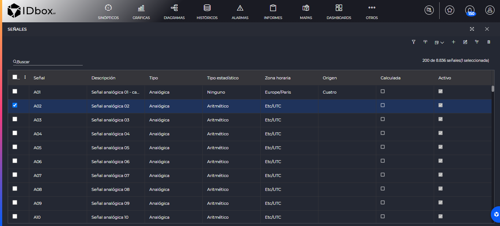
El botón de añadir nos permitirá dar de alta nuevas señales en el sistema. Si seleccionamos una señal podremos editarla mediante el botón de o borrarla mediante . Además podremos asociar rápidamente señales a un grupo de señales con el botón marcando una o varias señales al mismo tiempo.
Por otro lado, el botón permite exportar un documento Excel en dos modalidades: con los datos de las señales seleccionadas o una plantilla base, que en ambos casos puede ser importado posteriormente al sistema mediante el botón para realizar así altas, modificaciones masivas de señales o ambas.
Si añadimos o editamos a una señal nos abrirá una ventana para modificar sus datos.
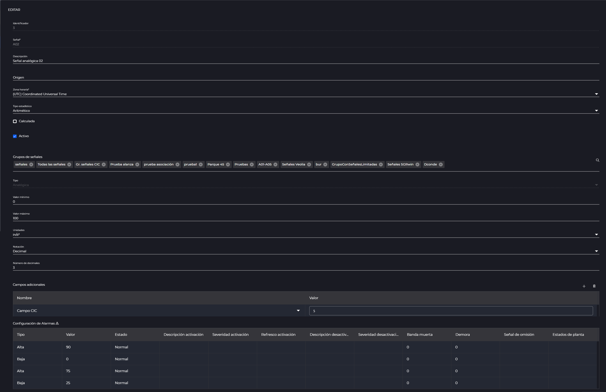
Aquí se explican los campos de esta sección:
- Identificador: El identificador de la señal, asignado automáticamente por el sistema.
- Señal: El nombre de la señal.
- Descripción: Descripción de la señal.
- Origen: Información acerca del origen de datos de la señal.
- Zona Horaria: Nos permitirá cambiar la zona horaria a la que pertenezca la señal.
- Tipo estadístico: Nos permitirá seleccionar si el estadístico de la señal es “Aritmético” o “Ponderado en el tiempo”.
- Calculada: Indica si la señal es calculada o no.
- Activo: Si está marcado, indicará que la señal está activa en el sistema.
- Grupos de señales: Los grupos de señales a los cuales pertenece la señal. Si lo pulsamos nos abrirá un selector seleccionarles.
- Tipo: Indica si la señal es “Analógica”, “Digital” de tipo “Texto” o “Discreta”.
En caso de que una señal sea analógica además veremos los siguientes campos:
- Valor mínimo: Valor mínimo de la señal.
- Valor máximo: Valor máximo de la señal.
- Unidades: Combo que contiene tipos de unidades posibles para asignar a la señal.
- Notación: Si sus valores se representarán en notación “Decimal” o “Científica”.
- Número de decimales: Indica con cuántos decimales se representará la señal.
En el caso de una señal digital podremos establecer:
- Valor verdadero: Texto que representa que la señal tenga valor verdadero.
- Valor falso: Texto que representa que la señal tenga valor falso.
Por último en caso de las discretas podemos seleccionar una categoría.
En el último grid veremos la configuración de las alarmas.
Sólo en el caso de que hayamos entrado a editar la señal desde la sección edición catálogo desde el configurador de servicios
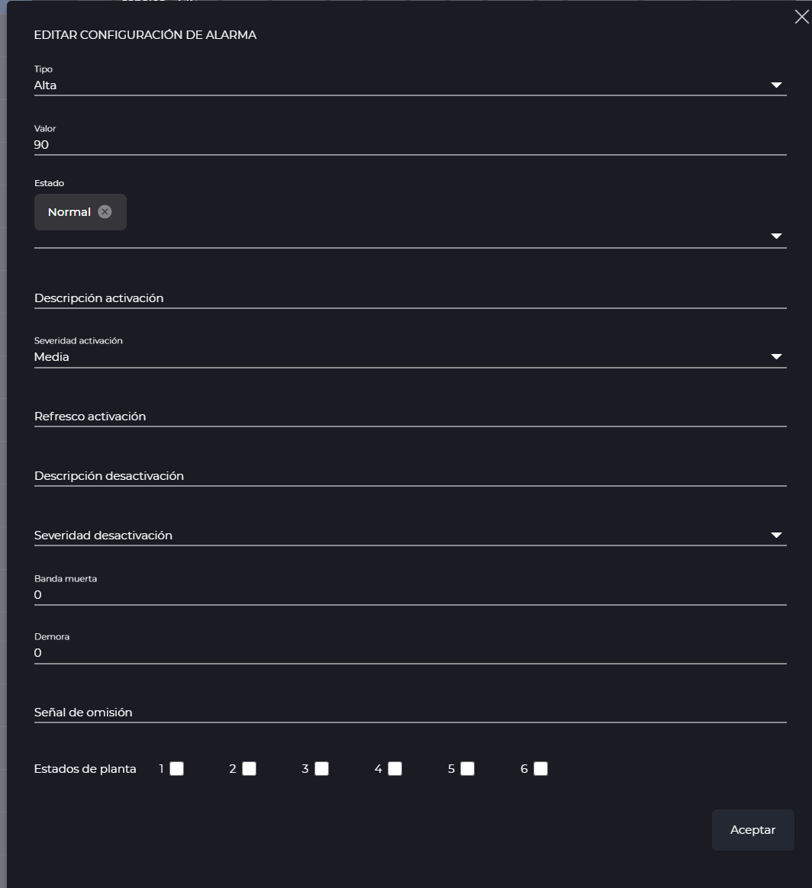
Los campos de configuración de una alarma son los siguientes:
- Tipo: Tipo de alarma que se va a controlar. Los valores posibles son “Valor”, “Alta”, “Baja” y “Estado”:
*Valor: Si el valor de la arma es exactamente el valor que especifiquemos en el campo “Valor”, se disparará. *Alta: Si el valor de la alarma supera el umbral del campo “Valor”, se disparará la alarma. *Baja: En el momento que el valor de la alrma sea inferior a el campo “Valor”, se disparará. *Estado: Si la alarma pasa a tener el estado especificado en el campo “Valor”, se disparará.
- Valor: Campo que variará en función del tipo. Será un número si el tipo es “Valor”, “Alta” o “Baja” y uno o varios estados si es de tipo “Estado”.
- Estado: Estado que tendrá la alarma al emitirse.
- Descripción activación: Mensaje que se le da a alarma cuando se active.
- Severidad activación: Severidad correspondiente a la alarma que se activa. Los valores posibles son “Trivial”, “Baja”, “Media”, “Alta” o “Crítica”.
- Refresco activación: Tiempo, en segundos. Si desde que la alarma se activó, pasa este tiempo con ella activa, se volverá a pedir el reconocimiento de la misma.
- Descripción desactivación: Descripción que se dará cuando la alarma se desactive.
- Severidad desactivación: Severidad correspondiente a la alarma cuando se desactive. Los valores posibles son “Trivial”, “Baja”, “Media”, “Alta” o “Crítica”.
- Banda muerta: Margen diferencial para recuperar el valor de alarma.
- Demora: Tiempo que tiene que cumplir la alarma para que realmente se dispare.
- Señal de omisión: En este campo se indica la señal digital que omitiría esa alarma cuando su valor sea verdadero.
- Estados de planta: Estados del sistema en los cuales se aplicaría la definición de alarma.
Para guardar la señal en su totalidad, pulsaremos en el botón de “Aceptar”.
2.2 Información
Los campos anteriormente mostrados en el plano de la configuración se encuentran también disponibles para su visualización, junto con más detalles, a través de la pestaña de información de señal. Su apertura puede realizarse mediante el icono de información que se sitúa a continuación de la señal como muestra en el siguiente ejemplo de la vista principal del explorador.
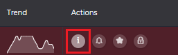
Una vez abierta, y como se puede observar en la siguiente imagen, la pestaña de información se divide en varios apartados navegables mediante el menú situado en el lateral izquierdo así como un resumen de su nombre, descripción, tipo y acceso directo a la edición en la parte superior.
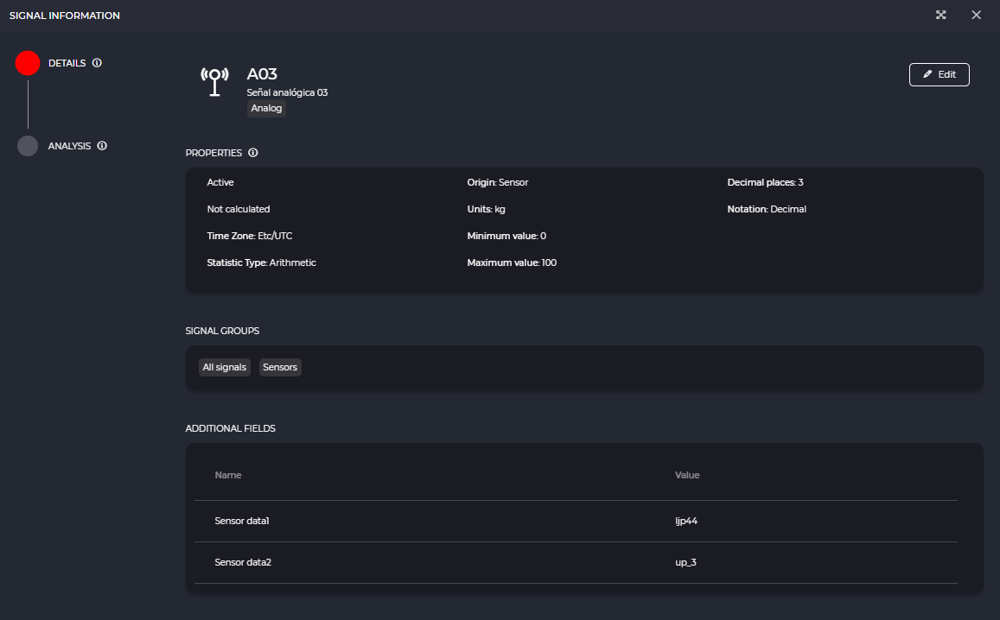
Dependiendo del tipo de señal se mostrarán disponibles distintas opciones en función de sus características. En el siguiente listado se describen cada una de ellas.
- Detalles: muestra las propiedades y características, grupos a los que pertenece, campos adicionales y alarmas configuradas.
- Documentos: lista de documentos clasificados por su tipo, según los permisos y grupo de seguridad del usuario, en los que se está utilizando la señal consultada.
- Análisis: se visualiza el resultado de la aplicación de diferentes técnicas de análisis sobre los datos para obtener información sobre el comportamiento de la señal a lo largo del tiempo.
-
El análisis de estadísticos se encuentra disponible para las señales analógicas, digitales y discretas. El valor surge de la aplicación de distintas funciones sobre los datos que permiten conocer información sobre cómo se comporta el histórico. La cantidad de estadísticos disponibles varía en función del tipo de la señal sobre los que se calculan.
-
La gráfica de distribución de los datos muestra cómo se organizan los valores de la señal según el número de observaciones para el periodo de tiempo seleccionado. La cantidad de datos utilizados para la representación se trata de una muestra resumida mediante marca.
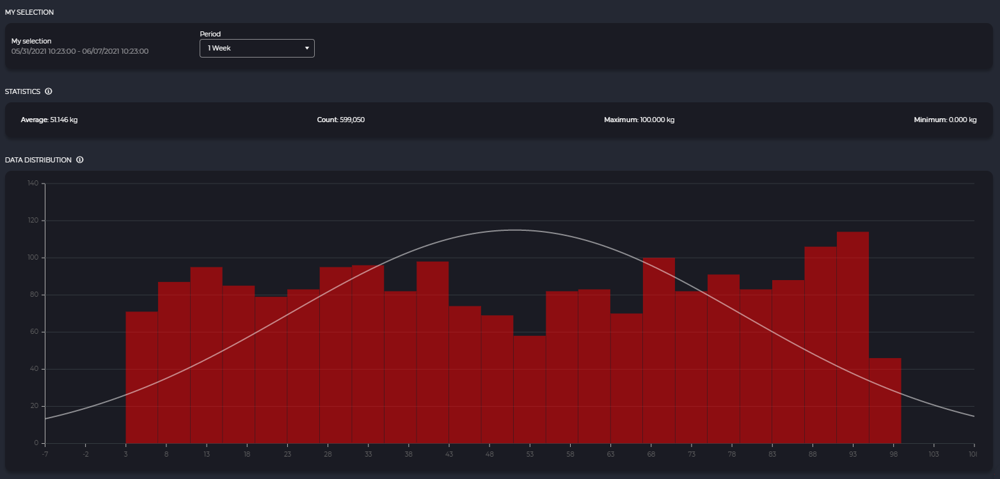
3 Grupos de Señales
En esta sección podremos gestionar los grupos de señales que existen en el sistema. Podemos acceder a ella desde el panel de control:

Esto nos llevará a un grid con los grupos de señales dados de alta. Mediante el buscador podremos filtrar algún grupo de señales.
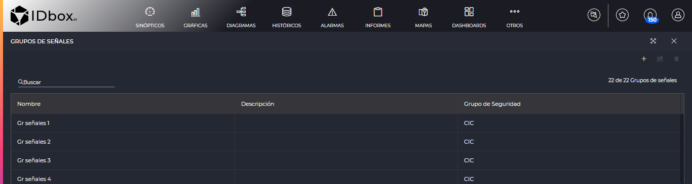
Añadiremos un nuevo grupo de señales mediante el botónde añadir . Si seleccionamos un grupo concreto se nos habilitarán las opciones de editarle o eliminarle .
Al añadir o editar entraremos en la sección de edición de un grupo de señales.
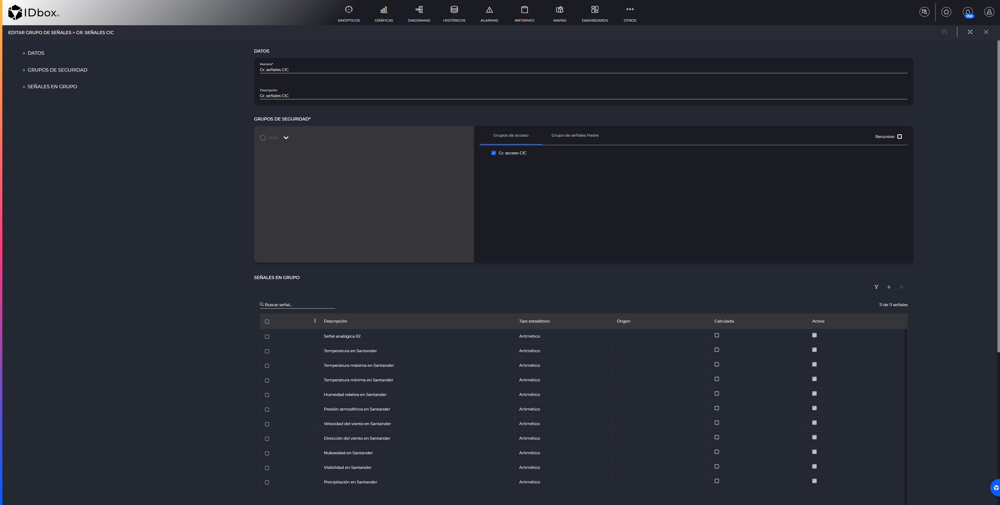
En esta pantalla podremos editar las siguientes propiedades:
- Nombre: Nombre con el que visualizaremos el grupo de señales.
- Descripción: Descripción de el grupo de señales.
- Grupos de seguridad: Seleccionaremos un grupo de seguridad existente en el cual irá el grupo de señales. No es posible modificarle una vez el grupo ya esté creado.
- Grupos de acceso: Indicarán los grupos de acceso que podrán visualizar este grupo de señales.
- Grupo de señales padre: Listará el resto de grupos de señales dentro del grupo de seguridad seleccionado para que podamos seleccionar cual será su padre en la jerarquía de grupos de señales.
- Señales en grupo: Grid que nos mostrará las señales que están en este grupo de señales. Podremos añadirlas mediante o quitarlas del grupo mediante .
Para guardar el grupo de señales pulsaremos en el botón de de la barra de herramientas.
3 Campos adicionales
En esta sección podremos gestionar campos adicionales de las señales que existen en el sistema. Podemos acceder a ella desde el panel de control:

Esto nos llevará a a la ventana de gestión de campos adicionales, en la parte izquierda podremos seleccionar el grupo de seguridad del cual deseamos ver los campos adicionales o marcar que deseamos ver todos los campos adicionales del sistema.
Nota: si seleccionamos “Mostrar todos los campos adicionales del sistema” no podremos añadir un nuevo campo adicional.

Añadiremos un nuevo campo adicional mediante el botón de añadir . Si seleccionamos un campo adicional se nos habilitarán las opciones de editarle o eliminarle .
Al añadir un nuevo campo adicional simplemente se añadirá una nueva fila a la tabla de campos adicionales en la cual deberemos indicar el nombre que deseamos dar al nuevo campo adicional.
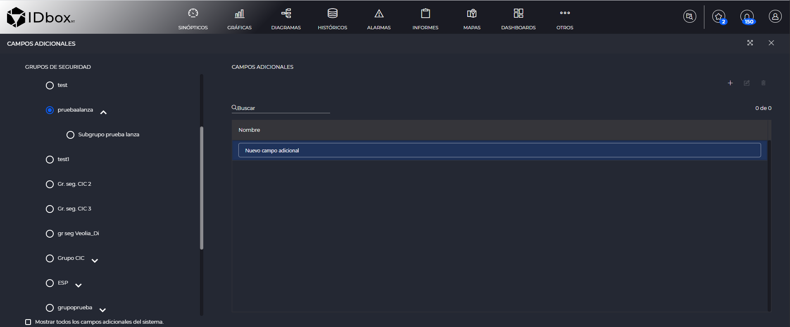
4 Funciones
En esta sección podremos gestionar las funciones que existen en el sistema. Podemos acceder a ella desde el panel de control:

Esto nos llevará a un grid con las funciones dados de alta. Mediante el buscador podremos filtrar las funciones.

Añadiremos una nueva función mediante el botón de añadir . Si seleccionamos una función se nos habilitarán las opciones de edición y borrado .
Al añadir o editar se abrirá la sección de edición de una función.

En esta pantalla podremos editar las siguientes propiedades:
- Nombre: Nombre con el que visualizaremos la función.
- Descripción: Descripción de la función.
- Ecuación: Podremos añadir una señal que se mostrará como histórico en la ecuación u operadores que se encuentran en los desplegables de la parte inferior.
Para guardar la función pulsaremos en el botón de de la barra de herramientas.
5 Unidades
En esta sección podremos gestionar las unidades que existen en el sistema. Podemos acceder a ella desde el panel de control:

Esto nos llevará a un grid con las unidades dadas de alta. Mediante el buscador podremos filtrar las unidades.

Añadiremos una nueva unidad mediante el botón de añadir . Si seleccionamos una unidad se nos habilitarán las opciones de edición y borrado .
Al añadir o editar se abrirá la sección de edición de una unidad.
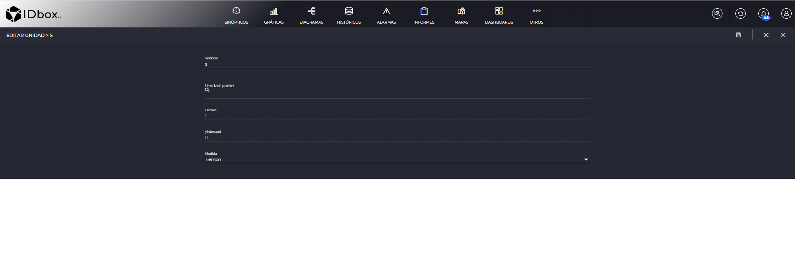
En esta pantalla podremos editar las siguientes propiedades:
- Símbolo: Es el símbolo usado para expresar la unidad.
- Unidad padre: Es la unidad de la que dependerá la unidad en creación/edición(Opcional).
- Medida: Es el tipo de medida, si tiene unidad padre tendrá la medida del padre.
- Slope: Es el valor por el que hay que multiplicar la unidad actual para obtener la unidad padre
- yIntercept: En caso de que la unidad padre y la actual no coincidan en el valo cero, se establece la diferencia entre ambas. Por ejemplo grados celsius tendría yIntercept = -273.15, ya que el 0 de la unidad padre (grados Kelvin) equivale a -273.15°C
Para guardar la unidad pulsaremos en el botón de de la barra de herramientas.
6 Categorías
En esta sección podremos gestionar las categorías que existen en el sistema. Podemos acceder a ella desde el panel de control:

Esto nos llevará a un grid con las categorías dadas de alta. Mediante el buscador podremos filtrar las categorías.

En la parte izquierda encontraremos el listado de categorías con sus botones para añadir , editar y eliminar .
Si existen categorías, por defecto la primera se seleccionará al acceder a esta pantalla, lo que hará que en la parte derecha de la pantalla se muestre el grid con los valores de esa categoría.

Si seleccionamos el valor de una categoría se nos habilitarán las opciones de edición y borrado .
En esta pantalla las acciones de editar y añadir se realizarán dentro del mismo grid sin necesidad de acceder a una nueva pantalla, una vez consideres que has terminado la edición/añadido de valores deberás usar el botón de guardar que aparece al editar/añadir.
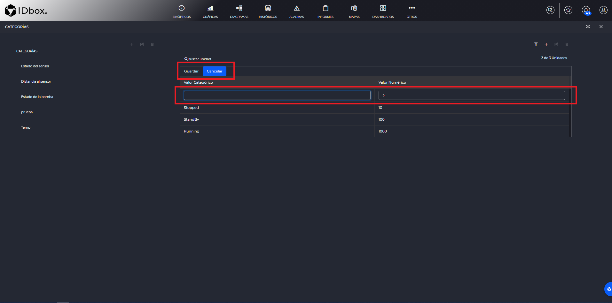
En este grid se podrán editar: * Valor Categórico: Texto usado para representar el valor. * Valor Numérico: Clave numérica que identifica el valor.